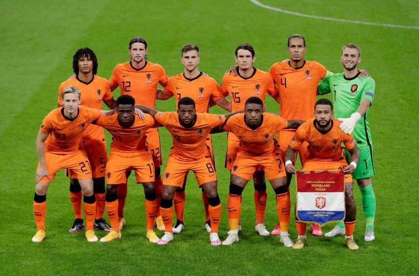

COPAS QUE JÁ PARTICIPOU:
A Seleção dos paises baixos é a Holanda. Já participou de 10 edições da Copa do Mundo de futebol.Em 2022 Fará sua 11° participação na edição que será no Catar/Qatar

PREMIAÇÕES QUE JÁ ALCANÇOU
A seleção Holandesa já foi três vezes vice-campeã (1974, 1978 e 2010), terceiro lugar em 2014 e quarto lugar em 1998, mas ainda não foi campeã do mundo.
NOME DO TÉCNICO:
Louis van Gaal
PRINCIPAIS JOGADORES
Lang
Malen
Depay
Tabela de jogos
| Data/Hora | Estádio | Adversário |
|---|---|---|
| 21 nov 2022 / 13h00 | Estádio Al Thumama | Senegal |
| 25 nov 2022 / 19h00 | Estádio Internacional Khalifa | Equador |
| 29 nov 2022 / 18h00 | Estádio Al Bayt | Catar |